地政学
ラバトは王宮、政府、議会、各国大使館が集まるモロッコの首都です。大西洋、マグレブ、欧州、西アフリカ、アラブ世界を結ぶ外交の窓口で、河口の橋と港の記憶が国家の判断に近い都市です。海風も外交の背景になります。
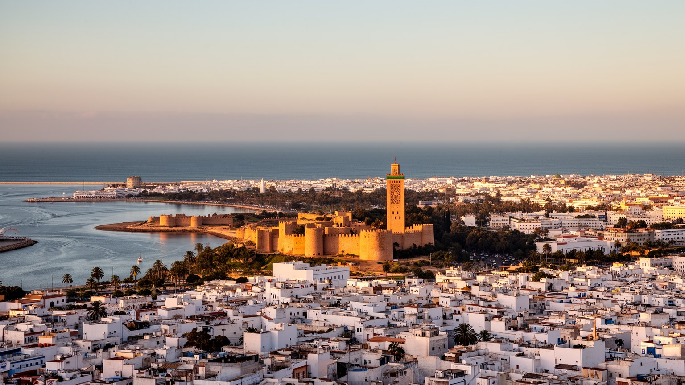
🇲🇦 モロッコ / ラバト＝サレ＝ケニトラ地方 / World City Atlas
大西洋とブー・レグレグ河口に開くモロッコの首都です。王宮、官庁、外交団、旧市街、ウダイヤ、ハッサン塔、河畔開発、サレとの生活圏が重なり、王国の政治と穏やかな日常を結びます。
都市の骨格
ラバトはモロッコ最大の経済都市ではありません。けれども王宮、行政、外交、大学、文化機関、世界遺産、サレとつながる河口の交通が集まり、国の制度と暮らしを読み解くための密度を持つ首都です。
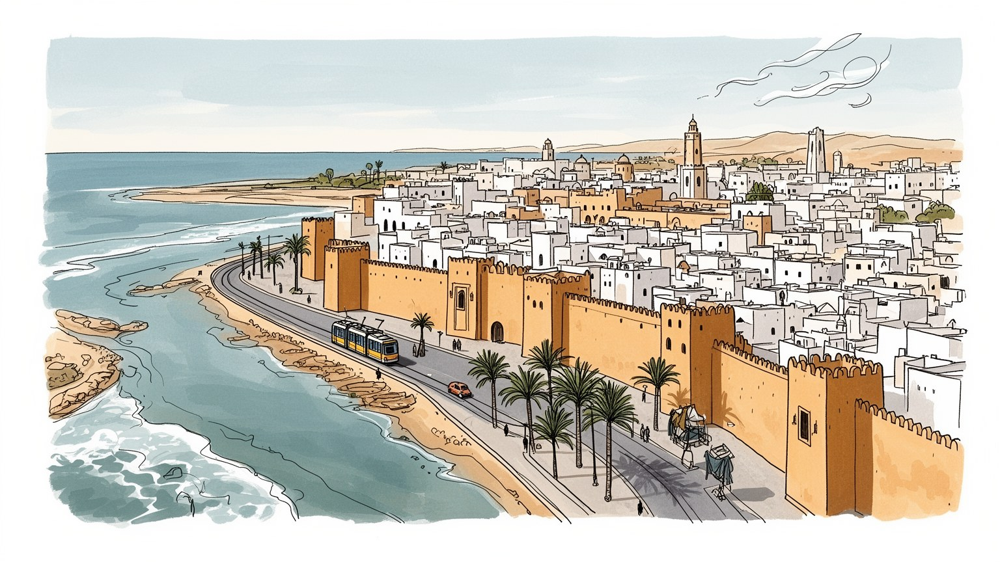
ラバトは王宮、政府、議会、各国大使館が集まるモロッコの首都です。大西洋、マグレブ、欧州、西アフリカ、アラブ世界を結ぶ外交の窓口で、河口の橋と港の記憶が国家の判断に近い都市です。海風も外交の背景になります。
行政、外交、教育、研究、文化、観光、手工芸、建設、サービス業が雇用を作ります。サレやテマラからの通勤、旧市街の店番、学生のアルバイトが交わり、安定職と若者の不安が並びます。市場の朝も街を動かします。
アラビア語、アマジグ語、フランス語、イスラムの礼拝、王都の儀礼、アンダルス音楽、現代美術、旧市街の職人文化が重なります。ラマダンの夕刻や音楽祭が街の音を変えます。ハリラの香りと拍手も広場に残ります。
旅行者はウダイヤ、旧市街、ハッサン塔、ムハンマド五世廟、河口、海岸を歩きます。住民はトラム、学校、家賃、行政手続き、ミント茶の店、海風の夕景を通じて首都を使います。子どもと高齢者も広場で休みます。
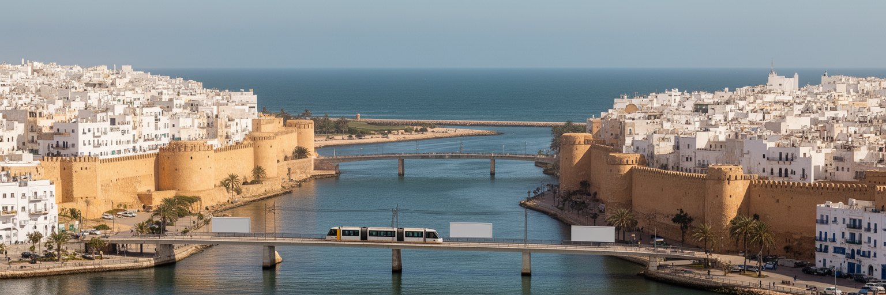
ラバトの都市としての輪郭は、ブー・レグレグ川が大西洋へ出る河口にあることから始まります。川の南岸にラバト、北岸にサレが向かい合い、城壁、橋、トラム、マリーナ、港の記憶、海岸の風が一つの都市圏を作ります。政治の中心はラバト側にありますが、通勤、買い物、親族関係、学校、住宅市場は川を越えて広がります。河口は守りの地形でもあり、海へ開く玄関でもありました。ウダイヤのカスバから海を望むと、軍事、交易、海賊行為、植民地、独立後の行政都市が同じ水辺に折り重なって見えます。現代の河畔開発は、散歩道や文化施設を整える一方、低地の治水、湿地、生態系、住宅価格、公共空間の使い方をめぐる緊張も生みます。ラバトを読むには、王宮や官庁だけでなく、川を渡る人の流れを見る必要があります。橋の上の車列、トラムの乗客、サレから通う学生、海辺で休む家族、城壁の影で働く職人が、首都の実像を作っています。河口は景観の背景ではなく、行政首都と生活都市を結び、同時に分ける地理的な装置です。大西洋の風は街を涼しくしますが、高潮や海岸侵食のリスクも運びます。水辺をどう開き、どう守るかは、ラバトの上品な景観を保つだけでなく、都市圏の公平性を決める役割を持ちます。日陰、歩道、橋の容量、川辺の公共交通を整える小さな判断も、両岸の暮らしやすさを左右します。水辺のカフェから聞こえる話し声や波音も、首都の将来像を映します。
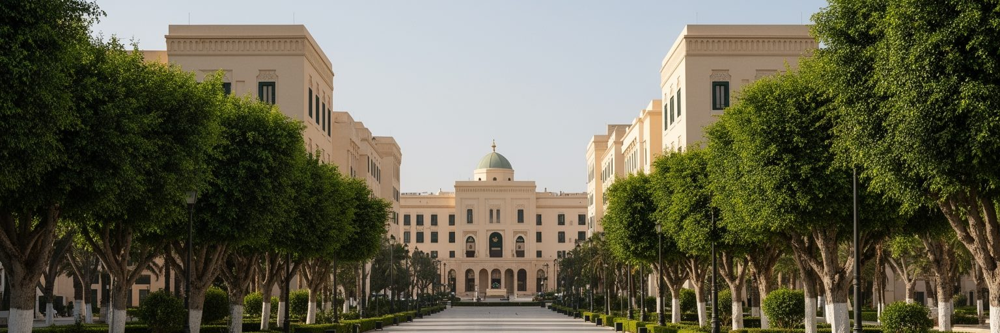
ラバトはモロッコ王国の政治的な中心です。王宮、政府機関、議会、裁判所、各国大使館が集まります。カサブランカが金融と産業の重心を担うのに対し、ラバトは国家の儀礼、法制度、外交、政策調整を引き受けます。広い並木道、警備のある区域、整った官庁建築は、王権と近代行政が共存する首都の姿を示します。王制は憲法上の制度というだけでなく、宗教的権威、国民統合、領土問題、社会改革の象徴として都市空間に存在します。官庁街を歩くと、モロッコがアラブ、アマジグ、イスラム、アフリカ、欧州との関係を調整しながら国家を運営していることが分かります。一方で、行政首都の整然とした顔は、住民の日常課題を覆い隠すこともあります。若者の失業、住宅費、地方との格差、公共サービスへの期待、政治参加への距離感は、首都でこそ見えやすいです。ラバトの政治性は、大規模な群衆だけでなく、許認可を待つ市民、大学で議論する学生、政策文書を作る公務員、王宮周辺の儀礼を見守る人々の動きに表れます。ここでは国家が抽象的な存在ではなく、通り、建物、警備、式典、書類、予算として日常の近くにあります。静かな街の秩序は、制度への信頼と緊張の両方によって保たれています。そのため首都の公共空間は、権威を示す舞台でもあり、市民が制度との距離を測る場所でもあります。行政の近さは、期待の大きさも生みます。
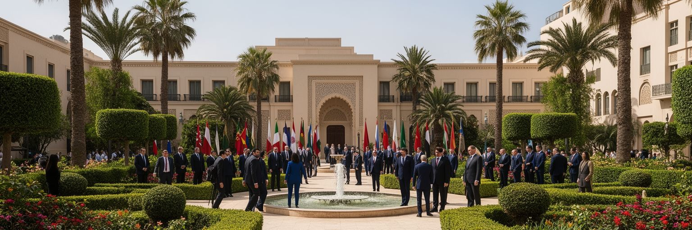
ラバトの外交都市としての重要性は、モロッコの地理と歴史に深く結びついています。国は地中海と大西洋に面し、欧州に近く、サハラ以南アフリカへ開き、アラブ世界とアマジグ世界の双方に属します。ラバトには大使館、国際機関、文化センター、開発協力の事務所が集まり、移民、貿易、治安、気候、水、エネルギー、宗教対話、サハラをめぐる外交が扱われます。スペイン、フランス、米国、西アフリカ諸国、湾岸諸国との関係は、首都の日常にも影を落とします。留学生、外交官、研究者、NGO職員、ビジネス関係者がラバトを通り、ホテルや会議室、大学、文化施設が国際的な会話の場になります。外交は首脳会談だけではありません。翻訳者、運転手、警備、事務職、学者、記者、料理人、清掃員の仕事によって成り立つ都市活動です。ラバトの落ち着いた景観は、周辺地域の緊張と対照的に見えますが、そこでは国境、移民、海上交通、テロ対策、エネルギー投資、宗教教育をめぐる複雑な判断が重なります。大西洋岸の首都は、マグレブの一都市にとどまらず、欧州、アフリカ、アラブ世界を結ぶ交渉の舞台です。その役割は高層ビルよりも、信頼を積み上げる制度と人材の厚みによって測られます。小さな会議や文化交流の積み重ねも、長期的には港や道路と同じほど都市の国際性を支えます。穏やかな会話やラジオのニュースが、難しい争点の入口になります。
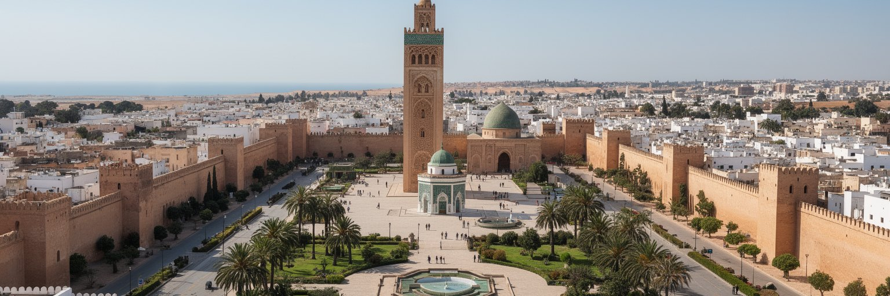
ラバトの世界遺産としての魅力は、単一の遺跡ではなく、複数の時代が都市の中で並んでいることにあります。ハッサン塔と未完の大モスク、ムハンマド五世廟、ウダイヤのカスバ、旧市街、城壁、植民地期に整えられた新市街、独立後の首都機能が、歩ける距離に重なります。アルモハド朝の野心、アンダルスからの移住、海上交易、フランス保護領期の都市計画、王国の近代化が、別々の展示室ではなく同じ街路で出会います。世界遺産という言葉は観光の品質保証のように使われがちですが、ラバトでは保存と生活の両立が重要です。旧市街には住民の家、工房、モスク、学校、商店があり、遺産は日常の中で使われています。建物を美しく修復するだけでは不十分で、家賃上昇、観光客の集中、職人の後継者不足、交通、廃棄物、住民の居場所を考えなければなりません。ラバトの遺産は、モロッコが自らの歴史をどう語り、何を未来に残すかを示す政治的な選択でもあります。ハッサン塔の広場の荘厳さと、旧市街の狭い路地の生活感を同時に見ると、首都の時間が一方向に進んでいないことが分かります。古い石と近代的な街路が共存するからこそ、ラバトは静かながら厚い都市になります。保存の成功は、壁を残すことだけでなく、住民がその近くで暮らし続けられるかにもかかっています。日々使われる遺産ほど、都市の記憶は強く残ります。
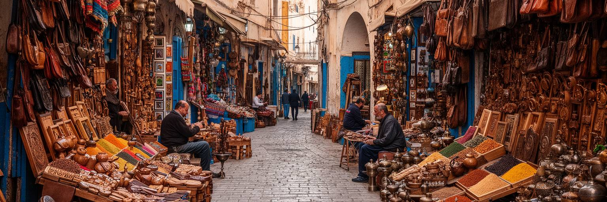
ラバトの旧市街は、フェズやマラケシュほど迷宮的に巨大ではありませんが、首都の日常文化を読むには欠かせない場所です。狭い路地には織物、革製品、刺繍、木工、金属細工、香辛料、菓子、日用品の店が並び、観光客と住民の買い物が交わります。職人の仕事は、土産物の装飾としてだけでなく、家族経営、徒弟制度、地域の信用、宗教暦、結婚や祭礼の需要に支えられてきました。大量生産品とオンライン販売が広がる中で、手仕事は価格競争、後継者不足、材料費、観光の波に影響されます。旧市街の店先で交わされる値段交渉や茶の時間は、商売でもあり社会関係の確認でもあります。都市政策が旧市街を美観地区として扱いすぎると、住む人と働く人の負担が見えにくくなります。逆に、生活の場としての密度を尊重すれば、遺産は生きた経済になります。ラバトの旧市街では、王都の重厚な象徴とは違う、手触りのある首都性が見えます。行政文書や外交会議の都市ですが、路地の小さな工房が国の文化イメージを支えます。観光客が職人の手元を眺める時、その背景には家賃、修業、原料、販売経路、家族の労働があります。旧市街を歩くことは、モロッコの美を消費するだけでなく、それを作り続ける人々の条件を見ることでもあります。市場の活気を残すには、物流、清掃、防火、住民の静けさを同時に守る細かな管理が必要になります。
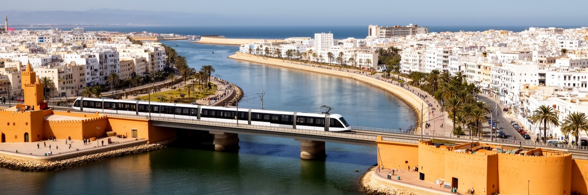
ラバトを一つの行政市だけで理解すると、都市の実態を見落とします。ブー・レグレグ川の北岸にはサレがあり、さらにテマラや周辺自治体を含めた広い首都圏として、通勤、住宅、教育、買い物、親族関係が動いています。ラバト側には王宮、官庁、大使館、大学、文化施設が集まり、サレ側には歴史ある旧市街、住宅地、労働者の生活、より手頃な住まいが広がります。トラムと橋は二つの都市を日常的に結び、朝夕には人の流れが川を越えます。サレはラバトの周辺ではなく、独自の歴史と誇りを持つ都市であり、河口の両岸が一体になって首都機能を支えています。都市開発がラバト側の美しい水辺だけを整えると、住宅費の上昇や公共投資の偏りが生まれやすくなります。首都圏として必要なのは、両岸をつなぐ交通、学校、医療、排水、公共空間を公平に扱う視点です。川は境界でもあり共有の資源でもあります。週末に河畔を歩く家族、トラムで通学する学生、サレから官庁へ通う職員、ラバトから市場へ向かう買い物客の動きが、双子都市圏の現実を作ります。地図上の線よりも、日々の移動こそが都市の形を決めます。ラバトの穏やかな首都像の背後には、川向こうから支える労働と生活があります。両岸を同じ都市として扱えるかどうかが、首都圏の混雑、住宅格差、公共サービスの質を左右します。川を越える時間は、都市の公平性そのものでもあります。
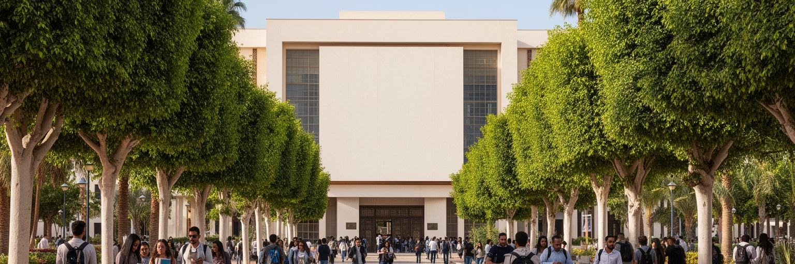
ラバトは行政都市であり、教育と研究の都市でもあります。大学、専門学校、研究機関、図書館、文化センターが集まり、法学、行政、工学、医学、農学、国際関係、言語、芸術を学ぶ学生が国内各地から来ます。首都にある学校は、官庁、国際機関、大使館、研究所、企業と近く、インターンシップや政策研究の機会を作ります。若者にとってラバトは、比較的落ち着いた環境で学びながら、国家の制度に近づける場所です。ただし教育が必ず安定した仕事へ直結するわけではありません。モロッコでは若年失業や大卒者の就職難が重要な社会課題であり、ラバトでも試験、資格、語学、家族の期待、地方出身者の家賃負担が学生生活を左右します。知識産業を育てるには、大学の看板だけでなく、研究費、起業支援、図書館、公共交通、手頃な住まい、女性の安全な移動、地方との連携が必要になります。ラバトのカフェやキャンパスでは、アラビア語、フランス語、アマジグ語、英語が交じり、SNSで見た政治や音楽の話題も議論に入ります。教育都市としての力は、若者が首都に来て学ぶだけでなく、学んだ後にどこで働き、どの地域へ知識を戻すかで測られます。ラバトの知的な雰囲気は、官庁街の秩序だけでなく、学生の不安と希望によって動いています。学ぶ場と働く場を近づける政策は、首都の若さを社会の力に変える鍵になります。図書館や安い食堂の居場所も、その足場を支えます。
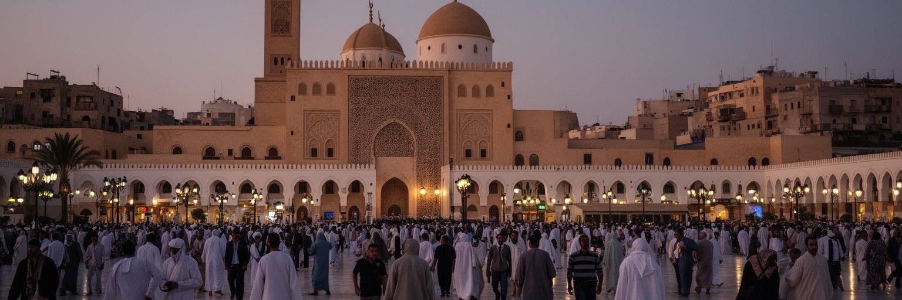
ラバトの宗教生活は、イスラムの礼拝、王都の儀礼、家族の慣習、近隣の助け合いとして都市に広がります。モスクの呼びかけ、金曜礼拝、ラマダンの夕暮れ、犠牲祭の準備、結婚や葬儀の時間は、官庁街の勤務リズムや市場の商いと結びついています。モロッコ王は宗教的権威を持つ存在でもあり、ラバトでは信仰と国家の関係が特に見えやすいです。ムハンマド五世廟やハッサン塔の広場は、観光名所であるだけでなく、王国の歴史、独立、宗教的正統性を象徴する空間でもあります。一方で信仰は、壮大な記念碑だけに宿るわけではありません。近所の小さなモスク、家庭の祈り、施し、断食明けのハリラの香り、職場での時間調整、学生寮の共同生活が、都市の日常を作ります。ラバトには外国人、留学生、キリスト教徒、ユダヤ系の記憶、世俗的な若者も存在し、宗教風景は単純ではありません。信仰は共同体の支えになる一方、ジェンダー、世代、服装、公共空間の使い方をめぐる議論も生みます。ラバトを読む時は、王都の荘厳さと生活の祈りを分けずに見る必要があります。礼拝の時間に店が静まり、夕方に家族が集まり、祝祭で街の速度が変わる時、首都は制度の都市から共同体の都市へ姿を変えます。その変化がラバトの深い落ち着きを生んでいます。祈りの場が学校や市場や家庭とつながることで、都市の道徳感覚も毎日のふるまいの中で作り直されます。
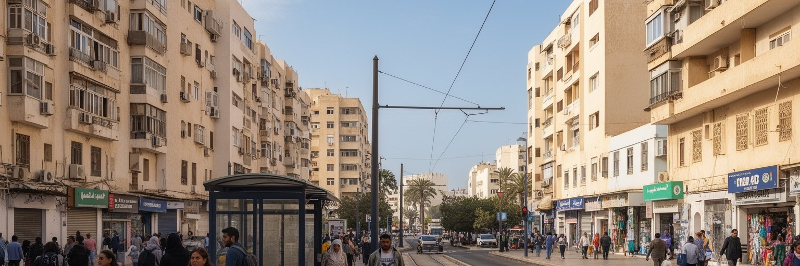
ラバトの暮らしは、モロッコの他の大都市に比べると落ち着いて見えます。海風、並木道、官庁街、公園、トラム、大学、文化施設があり、中心部には比較的整った公共空間が多くあります。けれども住民の日常には、家賃、住宅価格、通勤時間、学校、医療、行政手続き、若者の雇用、物価、家族扶養の負担があります。首都の安定した雰囲気は、公務員や専門職には便利さをもたらす一方、低所得世帯や地方から来た学生には費用の高さとして感じられます。住宅はラバト市内からサレ、テマラ、周辺地区へ広がり、トラムやバスが生活圏をつないでいます。公共交通が整うほど、仕事と住まいの選択肢は広がるが、駅から遠い地区や夜の移動には課題が残ります。日常のラバトを読むには、観光名所だけでなく、朝のパン屋、学校へ向かう子ども、官庁に並ぶ市民、夕方の海岸散歩、家族で使う公園を見る必要があります。首都は国家の顔である前に、住民が毎月の家計を組み、子どもを育て、病院へ行き、休日を過ごす生活の場です。穏やかな街並みは魅力ですが、その穏やかさを支えるには、手頃な住まい、歩ける道、安全な交通、緑地、公共サービスを広い都市圏に行き渡らせることが欠かせません。ラバトの日常は、上品さと生活費の現実が同居しています。公園のベンチやトラム停留所の使いやすさまで、暮らしの公平性を測る手がかりになります。
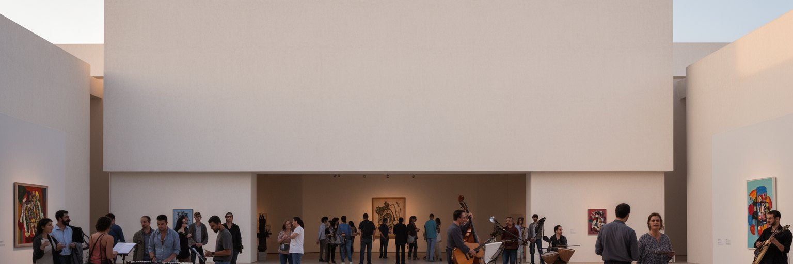
ラバトの文化は、旧市街の手工芸や王都の儀礼だけではありません。美術館、劇場、音楽祭、映画上映、文学イベント、文化財修復、大学のサークル、若者の音楽活動が重なり、首都はモロッコの現代文化を静かに育てています。アンダルス音楽、グナワ、アマジグの表現、アラブ古典、フランス語圏の文学、ヒップホップ、電子音楽、現代美術は、ラバトの文化施設や小さな場で出会います。行政都市であることは、文化政策や国際文化交流の資源を集めやすい一方、表現が制度的な枠に収まりやすい面もあります。若い作家や音楽家にとって、家賃、練習場所、発表機会、検閲への意識、観客の広がりは現実的な負担です。ラバトの文化を読むには、華やかなフェスティバルだけでなく、学校の劇、地域の音楽教室、独立系の展示、路上の会話、カフェでの議論も見たいところです。文化は観光客に見せる飾りではなく、都市が自分の歴史と現在を考える方法です。王国の首都で現代アートが育つことは、伝統と変化が対立だけでなく、交渉しながら同居していることを示します。静かな街だからこそ、作品の中に政治、移民、ジェンダー、信仰、言語をめぐる細かな問いが聞こえます。ラバトの文化的な厚みは、記念碑の周辺にある小さな創作の場によって支えられています。文化施設が若い表現者に開かれるほど、首都は保存の街から対話の街へ広がっていきます。
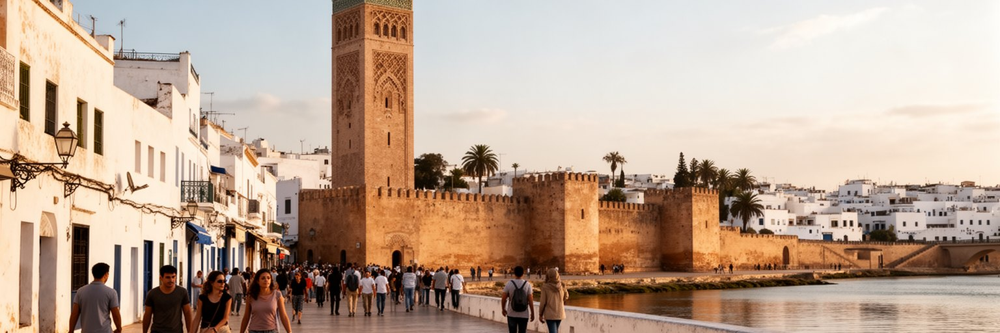
ラバトの観光は、マラケシュの熱気やフェズの迷宮とは違い、落ち着いた歩行の中で深まります。ウダイヤのカスバから河口と海を見下ろし、旧市街の路地を抜け、ハッサン塔とムハンマド五世廟の広場へ行き、王宮周辺の緑を眺め、近代美術館や考古学博物館を訪ね、夕方にブー・レグレグ川沿いを歩くと、古都、王都、植民地期の新市街、現代の行政都市が一つにつながります。旅行者にとってラバトは、モロッコの政治的な顔を理解する入口であり、カサブランカやマラケシュへ急ぐ途中で通過するだけでは惜しい都市です。観光は住民の生活空間と近い距離で行われるため、旧市街の写真撮影、宗教施設での振る舞い、住宅地での騒音、買い物の交渉には配慮が必要になります。ラバトの魅力は、名所の数よりも都市の読みやすさにあります。トラムを使えばサレとの関係も見え、海岸を歩けば気候と余暇が分かり、旧市街で昼食を取れば商いと家庭料理の距離が近づきます。観光が地元のガイド、職人、食堂、文化施設に利益を戻す形になれば、遺産保存と生活の両立を支えられます。ラバトを歩く旅は、静かな首都の表面の下にある、王権、移動、信仰、海、職人文化の層を丁寧に開く時間です。急がず歩ける都市そのものが、ラバト観光の最も大きな価値になっています。旅の速度を落とすほど、生活の音も街の奥行きも聞こえてきます。
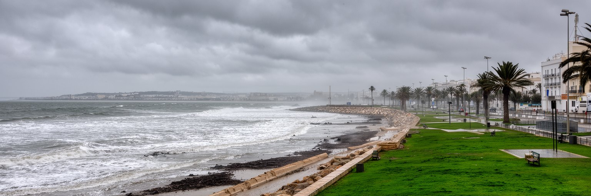
ラバトの気候は、夏に乾き、冬に雨を受ける地中海性の性格を持ち、大西洋の海風が暑さを和らげます。内陸の都市に比べれば過ごしやすい印象がありますが、水辺の首都には気候リスクもあります。海面上昇、高潮、海岸侵食、河口の洪水、強雨時の排水、熱波、干ばつは、住宅、道路、観光、文化遺産、緑地、港湾的な機能に影響します。モロッコ全体では水不足と農業への圧力が大きく、首都の水利用も国土の広い水政策と切り離せません。ラバトの緑地や並木道は都市の魅力ですが、維持には水が必要であり、節水、再利用、樹種選択、日陰づくりを考えなければなりません。河畔開発や海岸整備は市民の余暇を豊かにする一方、低地の脆弱性を高める可能性もあります。気候適応は大きな堤防だけではなく、雨水路の管理、海岸の自然地形、歩道の日陰、公共交通、古い建物の保全、暑さに弱い人への支援として進みます。ラバトの水辺は、観光写真では穏やかに見えますが、長期的には都市計画の厳しい試験場です。海風を楽しめる街を守るには、景観の美しさと防災、住民の利用、自然環境を同時に扱う必要があります。首都の品格は、気候変動に対して誰の生活を優先して守るかにも表れます。学校や市場に日陰と水を確保する地味な施策も、暑さの時代には都市の信頼を支えます。冬雨と夏の乾燥を前提にした設計が、これからさらに重要になります。
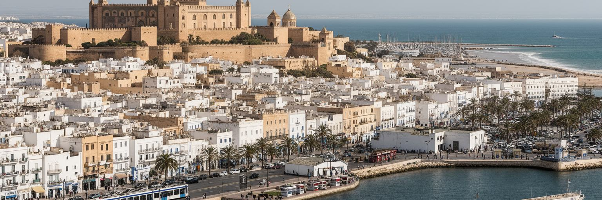
ラバトを読む面白さは、派手な巨大都市ではないところにあります。モロッコの経済的な重心はカサブランカにあり、観光の熱気はマラケシュやフェズに強く見えます。しかしラバトには、王権、行政、外交、教育、宗教、文化遺産、河口の地理、サレとの都市圏、穏やかな日常が凝縮されています。王宮周辺の秩序、ハッサン塔の広場、旧市街の商い、ウダイヤから見る大西洋、トラムで渡る川、大学の学生、海岸を歩く家族を同じ地図に置くと、首都が国家の象徴であるだけでなく、生活の場所であることが分かります。ラバトの静けさは、政治の不在ではなく、制度と儀礼が街の速度を整えている結果です。そこには若者の就職難、住宅費、公共交通、気候リスク、文化保存、地方との格差という現代的な問いもあります。首都を美しい記念碑だけで見ると、川向こうから通う労働者や旧市街の職人、学生の不安、信仰の時間を見落とします。逆に日常の細部を見れば、モロッコが複数の言語、歴史、地域、外交関係を調整しながら進んでいることが見えてきます。ラバトは静かな行政都市で、王国の構造を歩いて読める都市です。海と川と城壁に囲まれた落ち着きの中に、ミント茶の香り、音楽祭の余韻、子どもや高齢者が使う広場が重なります。だからこの街では、静けさを退屈さではなく、複雑な国をまとめる首都の作法として読む必要があります。